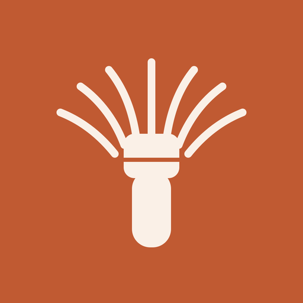
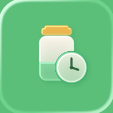

專為抹茶愛好者打造的記錄 App。從開封那天起，陪你記下每一罐的用量、心得與賞味期限，一步步陪你刷好一碗茶，並在快到期前溫柔提醒你「先喝這罐」。免註冊、免登入，資料只存在你自己的裝置與 iCloud。A journal made for matcha lovers. From the day you open a tin it records every gram, note and best-by date, guides you through whisking a better bowl, and reminds you to “drink this one first”. No sign-up or login — your data stays on your device and in your own iCloud.抹茶好きのための記録アプリ。開封したその日から一缶ごとの使用量・感想・賞味の目安を書き留め、一碗をていねいに点てるお手伝いをし、期限前に「先に飲もう」とお知らせ。登録・ログイン不要で、データは端末とご自身の iCloud にだけ保存されます。
Matchabook 把抹茶生活的每個瞬間，整理成一本溫柔的日記。Matchabook turns every moment of your matcha life into one gentle journal.Matchabook は抹茶のある暮らしの一瞬一瞬を、やさしい日記にまとめます。
為每一罐抹茶建檔：入手日、罐裝重量、開封日、用量與心得。內建 11 家日本老鋪、120 種以上銘柄；賞味與保存期限自動算好，快到期前溫柔提醒你「先喝這罐」。File every tin with its date, net weight, opening date, usage and notes. A built-in catalog of 120+ labels from 11 Japanese makers; best-by dates are worked out for you, with a gentle nudge to “drink this one first”.一缶ごとに入手日・内容量・開封日・使用量・感想を記録。日本の老舗11軒・120以上の銘柄を内蔵。賞味の目安は自動計算し、期限前に「先に飲もう」とやさしくお知らせします。
「陪你刷」分階段計時，搭配沉浸式動畫，動態島與鎖定螢幕也能看進度。刷完一鍵記錄，自動扣罐內用量，還能依抹茶與配方單價估算每杯花費。“Whisk with you” guides sifting, pouring and whisking with a staged timer and immersive animation — live on the Dynamic Island and Lock Screen. Log the bowl in a tap, deduct the amount automatically, and see the cost per cup.「一緒に点てる」は段階タイマーと没入アニメで、ダイナミックアイランドやロック画面でも進行を確認。点て終えたらワンタップで記録、使用量を自動で差し引き、1杯あたりのコストも試算します。
星等、想不想回購與旨／甘／苦／香／口感五味雷達，還能依年份分開評分。喝完一罐留下告別心得與紀念照，封存成回憶；也可匿名加入社群統計，對照大家的口味。Stars, repurchase intent and a five-axis taste radar, rated per vintage year. Finish a tin and keep a farewell note and photo as a memory; optionally join anonymous community stats to compare your taste.星評価・再購入意向・旨/甘/苦/香/口感の5軸レーダーを、年（ヴィンテージ）ごとに記録。飲み終えたら感想と記念写真を思い出として保存。匿名のコミュニティ統計で好みを比べることもできます。
標示「Pro」的是進階功能，其餘全部免費。Features marked Pro are the advanced ones; everything else is free.「Pro」の表示は上級機能です。それ以外はすべて無料。
拍照、選銘柄、記入手日與罐裝重量；抹茶之外還能收煎茶、玉露、焙茶，並分別記購入金額與原價。一鍵複製為新罐。Photo, label, date and weight — plus sencha, gyokuro, hojicha and more, with purchase and list prices in their own currencies. Duplicate a tin in a tap.写真・銘柄・入手日・内容量を記録。煎茶・玉露・ほうじ茶なども管理でき、購入額と定価を別々の通貨で。缶はワンタップで複製。
開封後的賞味日期、未開封的保存期限都自動計算，並在你設定的天數與時間送出提醒。Best-enjoyed dates after opening and best-before dates while sealed are computed for you, with reminders on the days and time you choose.開封後の賞味の目安も未開封の保存期限も自動計算。設定した日数と時刻にリマインダーが届きます。
薄茶、濃茶、拿鐵、甜點……記下用量與水溫（°C／°F），為每一杯加入多張照片，設定封面。Usucha, koicha, lattes, dessert — record the grams and water temperature (°C/°F) and add photos with a cover.薄茶・濃茶・ラテ・お菓子づくり。使用量と温度（°C/°F）を記録し、写真を複数追加してカバーも設定。
每一杯、每一罐都能加入影片與多張照片，留下沖泡的完整瞬間。Add video and multiple photos to every bowl and tin to keep the whole moment.一杯にも一缶にも動画と複数の写真を追加して、点てる瞬間をまるごと残せます。
依茶譜帶出抹茶、水量與水溫，沉浸式動畫陪你篩粉、注湯、刷茶；動態島與鎖定螢幕即時顯示進度。Presets fill in matcha, water and temperature; immersive animation guides sifting, pouring and whisking, live on the Dynamic Island and Lock Screen.茶譜から抹茶・お湯・温度を自動入力。没入アニメがふるう・注ぐ・点てるを案内し、ダイナミックアイランドとロック画面に進行を表示。
累積碗數、抹茶用量、連續天數與里程碑，達成時有小小的慶祝，還能做成成就卡分享。Bowls, matcha used, streaks and milestones — celebrate each unlock and share it as a card.点てた碗数・抹茶の量・連続日数・マイルストーン。達成時はお祝いと、シェアカードの作成も。
星等、想不想回購與五味雷達，依年份分開評分，一眼看懂你最愛哪一款。Stars, repurchase intent and a five-axis radar, rated per vintage — see which label you love most.星・再購入意向・5軸レーダーを年ごとに記録。いちばん好きな銘柄がひと目で分かります。
最多人喝、評價最高的銘柄一目了然；完整排行與你和社群平均的對照為 Pro。匿名、預設關閉、由你決定是否加入。The most-enjoyed and highest-rated labels at a glance; full rankings and comparison with the community average are Pro. Anonymous, off by default, opt-in.最も飲まれ評価の高い銘柄がひと目で。詳しいランキングとコミュニティ平均との比較は Pro。匿名・初期状態はオフで参加は任意。
一罐喝完，寫下告別心得、留一張紀念照，封存到「回憶」分頁，日後隨時回味。Finish a tin, write a farewell note, add a keepsake photo and archive it in Memories.飲み終えたら別れの感想と記念写真を残し、「思い出」タブに保存して振り返れます。
牛奶、糖、可可建檔，記一杯一鍵帶入。同款多瓶可一次新增、同時使用，加暱稱、保存期限並看剩餘量；每杯花費在存檔當下就記住。Save milk, sugar, cocoa and more. Add several bottles at once with nicknames, best-before dates and remaining amounts; each cup's cost is saved when you log it.ミルク・砂糖・ココアなどを登録しワンタップで入力。複数本をまとめて追加でき、ニックネーム・保存期限・残量も管理。1杯のコストは記録時に保存されます。
紀錄可切成日曆，每天喝了哪一杯一眼回顧；點開是一張快照，可一鍵做成分享圖卡。Switch Records to a calendar to revisit each day; tap for a snapshot and turn it into a share card.記録をカレンダー表示に。毎日の一杯をひと目で振り返り、スナップショットをシェアカードにできます。
茶筅、茶碗、茶杓、篩……建檔並記作者／窯元、入手日與價格；茶筅依「真、數穗、常穗」等稱呼登錄穗型。免費 5 件，Pro 無上限。Chasen, chawan, chashaku and more with maker or kiln, date and price; chasen are recorded by their real names. Five tools free, unlimited with Pro.茶筅・茶碗・茶杓・ふるいなどを作家／窯元・入手日・価格つきで登録。茶筅は「真・数穂・常穂」など実際の呼び方で。無料は5点、Pro は無制限。
賞味倒數、抹茶櫃、抹茶回憶三種小工具，一眼看見最急的一罐、快速記一筆、重溫過往照片。Freshness Countdown, Matcha Shelf and Matcha Memories widgets: see the most urgent tin, log fast, and revisit photos.賞味カウントダウン・抹茶棚・抹茶の思い出の3種。最も急ぐ缶の確認、すばやい記録、過去の写真の振り返りに。
依分類與品牌整理銘柄，可選擇匿名分享自訂銘柄、或下載大家貢獻的銘柄（可隨時關閉）；新增「全新自訂分類」為 Pro。Organize labels by category and brand, optionally share custom labels anonymously or download others' (off anytime); creating brand-new custom categories is Pro.分類とブランドで銘柄を整理。自作の銘柄を匿名で共有したり、みんなの銘柄をダウンロードも（いつでもオフ）。新しいカスタム分類の作成は Pro。
每月用量與每週趨勢免費；年度回顧、銘柄消耗排行、享用方式占比與消耗速度為 Pro。Monthly totals and weekly trends are free; the yearly review, label rankings and consumption pace are Pro.月間の使用量と週ごとの推移は無料。年間の振り返り・銘柄ランキング・消費ペースは Pro。
免註冊、免登入。紀錄存在你的裝置，並透過你自己的 iCloud 同步，開發者無法讀取。No sign-up or login. Records live on your device and sync through your own iCloud — we can't read them.登録・ログイン不要。記録は端末に保存され、ご自身の iCloud で同期。開発者は参照できません。
清新抹茶、沉穩大地、柔和莓果、經典墨藍、靜謐藕紫、復古羊皮、暖霞玫瑰；可跟隨系統或固定淺色／深色。Seven themes from Fresh Matcha to Warm Rose, with light and dark that can follow the system.フレッシュ抹茶からウォームローズまで7つのテーマ。ライト／ダークはシステム連動も固定も可能。
使用紀錄隨時匯出 CSV 帶走，自由分析。Export your usage log as CSV any time.使用記録をいつでも CSV で書き出して分析できます。
免費就能完整記錄抹茶生活；想要更多，一次買斷、永久使用，沒有訂閱。Free is enough to journal your matcha life; want more? A single one-time purchase, no subscription.無料で抹茶の記録は十分。もっと使いたいときは、買い切りで永久に。サブスクはありません。
購買透過 Apple 處理，可在所有裝置使用，並可「恢復購買」。開發者不會收到你的付款資訊。Purchases are handled by Apple, work on all your devices and can be restored. The developer never receives your payment details.購入は Apple が処理し、すべての端末で利用でき、「購入の復元」も可能です。支払い情報が開発者に届くことはありません。
用同樣的心意做的另外兩款 App。Two more apps made with the same care.同じ思いで作った、もう2つのアプリです。

掃條碼快速記錄，掌握家裡食物、日用品與美妝的到期日與存量，不再放到過期。Scan barcodes to track expiry dates and stock of food, daily goods and cosmetics — and stop wasting them.バーコードですばやく記録。食品・日用品・コスメの期限と在庫を把握して、期限切れをなくします。
一日一篇、只存在你自己的 iCloud；沒有伺服器、沒有廣告，寫日記永遠免費。One entry a day, kept only in your own iCloud — no servers, no ads, and writing is always free.1日1ページ、データはご自身の iCloud にだけ。サーバーも広告もなく、書くことはずっと無料です。
使用上的問題、建議或錯誤回報，歡迎來信，我們會盡快回覆。Questions, suggestions or bug reports are welcome — we'll reply as soon as we can.ご質問・ご提案・不具合の報告はメールでお気軽にどうぞ。できるだけ早く返信します。